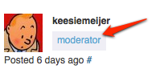
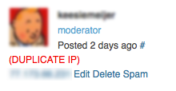

Forum posts (you replied to) in order of activity
A tool to display the topics of your WordPress [dot] org Profile Pages in order of activity can be found here:
Tools for WordPress dot org forum moderators
For more tools visit the support handbook helpful tools page
A tool to display the topics of your WordPress [dot] org Profile Pages in order of activity can be found here:
A Greasemonkey user script that forces https, adds view=all to topic urls and redirects if needed. Tested in Firefox and Chrome.
Two workflows for the Alfred app (version 2) to search the WordPress developer reference and the Codex function reference can be found here and here
Contributors: keesiemeijer, Clorith, anevins12
A Javascript tool that adds keyboard shortcuts to the following pages.
Type m in any of these pages to see a menu with all available shortcuts for the current page
This tool also appends "&view=all" to topic links where possible in the forums. This allows logged in moderators to see deleted and spam posts in a thread. Duplicate IPs and hidden links are detected and you can uncapitalize text or strip links with the click of a button. Display all (paginated) reviews and match IPs in the reviews screen. Extract IPs in BB-admin author pages. Ajax is used to make it easier to delete tags, posts or marking posts as not spam. Links to the modlook tag page and the spam queue are added to the mod menu.

If a user tags a post with "modlook" a link to the users profile page will be added after the tag.
Older versions and changlogs of the scripts can be found at the Release Archive or Github.
This tool can be installed in two ways, as a Javascript bookmarklet or as a Greasemonkey user script (Firefox, Chrome). The user scripts run automatically on the specific pages and the bookmarklet has to be clicked from the browser bookmark menu.
See the Disclaimer about about what browsers are supported
Drag this bookmarklet to your browser's bookmark menu: Moderator Tools
Go to one of the listed pages above and click the bookmarklet in your browser bookmark bar. Type m to see a menu with all shortcuts available for the current page.
Install Greasemonkey (If you haven't done so already).
Click this Firefox Greasemonkey user script link to install it
By typing m you open the menu where you can see information about the page and what shortcuts are available.
The menu.
Clicking "shortcuts" or typing "h" displays all shortcuts available for that page.
The current post is marked by a grey border.
In these pages an "Edit Profile" link is automatically added to all posts.
You can select a post by clicking in the author column. The author column gets a new background color when the post is selected (for visibility).

In the spam queue b-tagged, blocked and Akismet Never Trust (ANT) users are shown with a red background.
The user type is displayed if you're a logged in moderator

The current post is marked by a grey background color for the "User Type"


Buttons to display all (paginated)reviews, and match IPs on the current reviews page.
Go and play and test all the shortcuts for yourself.
If a thread contains duplicate IP's for different users it will show a warning (DUPLICATE IP) in all posts with the duplicate IP. Be aware that users with the same IP doesn't necessarily mean the users are gaming the system.

A button is added to the post editor to uncapitalize selected text. This button can be used for the post text and the topic title
Example before selecting text and clicking the button.
After.
A button to strip links from post content
Links with no text or less than 3 characters are detected in the post content.
The Greasemonkey user scripts hides the menu by default and uses a brownish background color for selected posts. By editing the Greasemonkey file you can have it show the menu by default and change the selected color. Find var aa="hide";var g="#e3cebd"; at the start of the minified javascript. Change "hide" to show var aa="show"; and change the color in var g="#e3cebd"; to your liking and save the file.
All the user scripts are tested in Firefox and Chrome. If other browsers support Greasemonkey user scripts try one of the (user.js) files found on this page. The Javascript bookmarklet can be used in all browsers.
Happy moderating